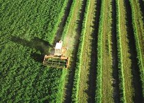
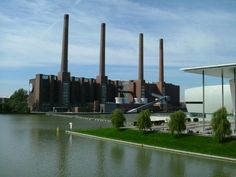

1.Introducción
El capítulo profundiza en la sostenibilidad desde una perspectiva integral, abordando tanto el ámbito personal como el profesional. Se enfatiza cómo las acciones individuales y corporativas tienen un impacto significativo en el medio ambiente y en la sociedad en general. El enfoque central está en los Objetivos de Desarrollo Sostenible (ODS) establecidos en la Agenda 2030, un plan global adoptado por las Naciones Unidas para abordar desafíos críticos como la pobreza, la desigualdad, el cambio climático y la degradación ambiental. Estos objetivos son universales y requieren la participación activa de todos los sectores de la sociedad, incluyendo gobiernos, empresas, organizaciones civiles y ciudadanos.
2.Desempeño Profesional y Personal
La sostenibilidad en el ámbito profesional y personal implica la adopción de prácticas que promuevan un equilibrio entre el desarrollo económico, el bienestar social y la protección del medio ambiente. Esto no solo se limita a las acciones en el lugar de trabajo, sino que también abarca las decisiones que se toman en la vida cotidiana. La sostenibilidad requiere un enfoque integral que considere:
Aspectos Económicos
Promover prácticas empresariales que sean rentables a largo plazo sin comprometer los recursos naturales.
Aspectos Sociales
Fomentar la equidad, la inclusión y el bienestar de las comunidades.
Aspectos Ambientales
Reducir el impacto negativo sobre el medio ambiente mediante la conservación de recursos y la minimización de residuos.
Las decisiones que se toman en el ámbito personal y profesional, como el consumo responsable, la eficiencia energética y la reducción de residuos, contribuyen a llevar una vida más sostenible y a construir un futuro más equitativo y respetuoso con el planeta.
3.Sectores Productivos y su Relación con los ODS
Sector Primario (Agropecuario)
El sector primario, que incluye la agricultura, la ganadería, la pesca y la silvicultura, es fundamental para la economía de muchos países y está directamente relacionado con varios ODS:

ODS 2: Hambre cero: Este objetivo busca promover la agricultura sostenible, mejorar la nutrición y garantizar la seguridad alimentaria.
ODS 6: Agua limpia y saneamiento: La gestión sostenible del agua es crucial en la agricultura.
ODS 12: Producción y consumo responsables: Implica reducir el desperdicio de alimentos y adoptar prácticas sostenibles.
ODS 13: Acción por el clima: Busca reducir las emisiones de gases de efecto invernadero en la agricultura.
ODS 14: Vida submarina: Promueve la pesca sostenible y la conservación de ecosistemas marinos.
ODS 15: Vida de ecosistemas terrestres: Protege y restaura los ecosistemas terrestres, incluyendo bosques y biodiversidad.
Sector Secundario (Industrial)
El sector secundario, que incluye la manufactura y la transformación de materias primas en productos terminados, también tiene un papel clave en la sostenibilidad:

ODS 7: Energía asequible y no contaminante: Promueve el uso de energías renovables y la eficiencia energética.
ODS 8: Trabajo decente y crecimiento económico: Busca promover un crecimiento económico inclusivo y sostenible.
ODS 9: Industria, innovación e infraestructura: Fomenta la inversión en infraestructuras resilientes y la adopción de tecnologías limpias.
ODS 12: Producción y consumo responsables: Implica mejorar la gestión de los recursos naturales y reducir los residuos.
Sector Terciario (Servicios)
El sector terciario, que incluye servicios como la salud, la educación, el turismo y el comercio, también tiene un papel importante en la sostenibilidad:
ODS 3: Salud y bienestar: Garantiza una vida saludable y promueve el bienestar para todas las edades.
ODS 4: Educación de calidad: Busca garantizar el acceso a una educación inclusiva y de calidad.
ODS 5: Igualdad de género: Promueve la igualdad de oportunidades y la eliminación de la discriminación de género.
ODS 11: Ciudades y comunidades sostenibles: Busca desarrollar ciudades sostenibles con acceso a viviendas y transporte adecuado.
Sector Cuaternario (Conocimiento e Información)
ODS 4: Educación de calidad: Contribuye a la educación mediante programas de formación y tecnologías educativas.
ODS 9: Industria, innovación e infraestructura: Fomenta la colaboración en investigación y desarrollo tecnológico.
ODS 10: Reducción de las desigualdades: Busca un acceso equitativo a la información y el conocimiento.
ODS 13: Acción por el clima: La investigación en energías renovables es esencial para combatir el cambio climático.
4.Colaboración y Acción Global
La implementación de los ODS requiere la colaboración de todos los actores de la sociedad, incluyendo gobiernos, empresas, organizaciones civiles y ciudadanos. Las Naciones Unidas han hecho un llamado a la acción para movilizar a todos los sectores en favor de una década de acción que permita alcanzar los objetivos de la Agenda 2030. Esto implica:
Acción a nivel mundial: Garantizar un mayor seguimiento, más recursos y soluciones innovadoras para abordar los desafíos globales.
Acción a nivel local: Implementar políticas y regulaciones que fomenten la sostenibilidad en las ciudades y comunidades.
Acción individual: Cada persona tiene un papel que desempeñar, desde el consumo responsable hasta la participación en iniciativas comunitarias.